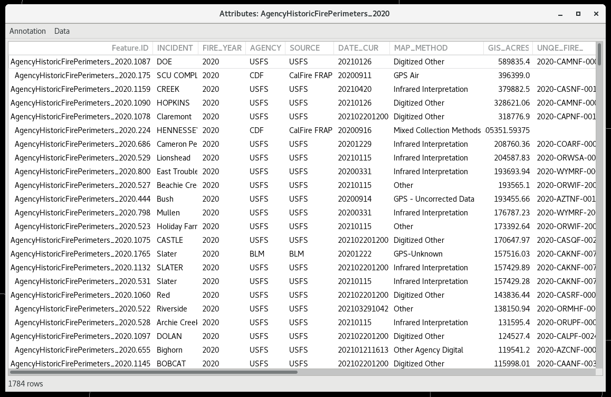
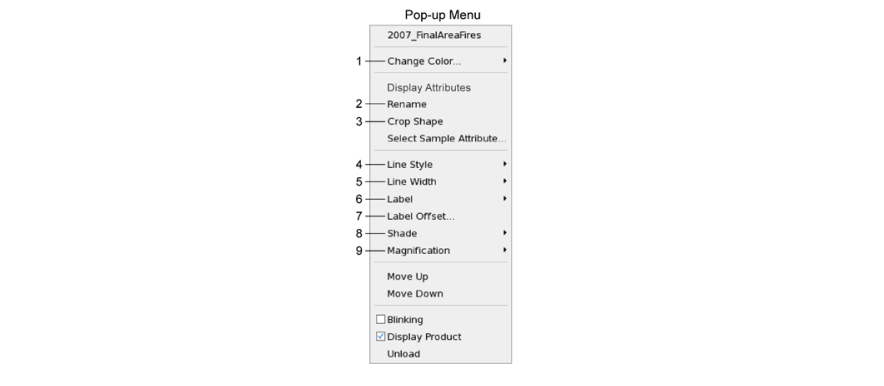

D2D User Guide : GIS Data
The Geographic Information System (GIS) application enables users to import geospatial data from varying GIS data sources for display in CAVE. CAVE currently only supports shape data in WGS84 unprojected latitude/longitude.
This section describes how to start the GIS application, configure the display attributes, and navigate through the various dialogs for importing map/map product shapefiles for display within CAVE. The following topics are discussed:
Display GIS Data
The GIS application is accessed through the CAVE menu by first selecting the Import option, and then choosing GIS Data from the Import submenu. The GIS DataStore Parameters dialog is comprised of four sections:
- DataStore Type: This section contains a data field where you select a file type from the dropdown list.
- Connection Parameters: This section contains a Directory data field where you can either select from a dropdown list or browse to a directory containing a set of map shapefiles. Clicking the Browse button opens the directory navigating/browser dialog, which allows you to navigate easily to the desired directory. After locating the desired directory, clicking the Connect button lists the available shapefiles.
- Load As: In this section the shapefiles can be loaded as a Map or as a Product. Descriptions of both follow.
- Map: When this radio button is selected, the selected shapefile displays as a map. Click and hold the middle mouse button to open a pop-up menu and select Show Map Legend to display the Map ID in the Legend area at the bottom of the display.
- Product: When this radio button is selected, the start and end date/time data fields become enabled. You can select a start and end date/time from the Calendar dialog. Clicking on the Calendar icon opens the Calendar dialog. Loading a shapefile with the Product radio button selected will return a shaded (color-filled) image of the Map Product. The Product ID will appear in the Legend area at the bottom of the display after selecting Show Product Legend from the middle mouse click pop-up menu. The map product displays with the model data when the valid time of the model data falls within the start/end time range selected for the map product in the GIS DataStore Parameters dialog. When the valid time of the model data falls outside the start/end time of the map product, the map product image does not display.
- Table: In this section you can select one of the shapefiles listed in the window for display. The selected file will be highlighted and the OK button at the bottom of the dialog will be enabled. Clicking the OK button closes the GIS DataStore Parameters dialog box and displays the selected map or map product.
GIS Data Preferences
Using the Preferences dialog, you can modify certain GIS display attributes in CAVE without having the GIS application open. Access the GIS Viewer via CAVE > Preferences > GIS Viewer.
The attributes that can be modified within CAVE apply to the map/map product image displayed on the Main Display Pane. They are: color of the highlights; highlight line style; highlight line width; and map product opacity. The button next to the name of the attribute displays a swatch of the current value. Selecting this button opens a dialog for modifying that attribute and redefining the default value.
A description of each attribute follows.
- Highlight Color: This button opens a dialog that includes a color wheel and a color palette. Clicking the OK button after changing the color sets the new color for the highlight that appears around a selected area (via the Attributes dialog), and closes the dialog. The new color is then displayed on the swatch.
- Highlight Style: This button opens a menu displaying a set of lines of differing styles. Doubleclicking on the desired line style sets the new style for the highlight that appears around a selected area (via the Attributes dialog), and closes the menu. The new line style is then displayed on the swatch.
- Highlight Width: This button opens a menu displaying a set of lines of differing widths. Double-clicking on the desired line width sets the new width for the highlight that appears around a selected area (via the Attributes dialog), and closes the menu. The new line width is then displayed on the swatch.
- Product Opacity: This button opens the Set Opacity dialog for setting the default opacity level for GIS map product images. The dialog includes a swatch and a slider. Moving the slider increases or decreases the opacity level. Clicking the OK button sets the default level and closes the dialog.
Beneath the four attributes are two buttons: Restore Defaults on the left and Apply on the right. The function of the Restore Defaults button is to restore “all” the attributes to their initial (default) values. Click this button only if you want to restore all attributes to their default values. If you accidentally click the Restore Defaults button, you will need to return to the attribute dialog(s) and redefine your desired values.
Use the Apply button to save any changes you make to the default attribute settings. Wait until you are satisfied with all the values you have set, and then click the Apply button once to save all the changes. The values you set here for the attributes will then be applied to the GIS application as the new defaults.
Customizing the GIS Attribute Dialog
You have the ability to highlight specific areas of the displayed map or map product image, and to hide other areas. These functionalities are executed through the Attributes dialog, commonly referred to as the “Attributes Table” because of its tabular style. To access the Attributes dialog, click and hold middle mouse button 3 (B3) on the Map ID in the Legend area to open the pop-up menu.
From the pop-up menu select the Display Attributes option to open the Attributes dialog.

The Attributes dialog includes two menus, Annotation and Data, which allow you to control highlighting and visibility for both the displayed images and the information contained in the Attributes dialog. For each row of information on the Attributes dialog there is an associated map/map product image displayed on the Main Display Pane.
Highlighting
Highlighting Selected Areas
To place a highlight around a selected area of the GIS display image and highlight the corresponding row on the Attributes dialog, click and hold B3 on the row you want to select. Check the Highlighted checkbox in the pop-up menu to activate highlighting. Multiple rows can be selected using Ctrl + B1 to select each row, which will highlight the selected row in blue. Then click and hold B3 on one of the selected rows; this will turn all selected blue rows dark gray and open the pop-up menu. After checking the Highlighted checkbox all selected rows will be highlighted yellow and a highlighted border surrounding all the areas on the map corresponding to those selected rows will be highlighted with the color setup in the Preferences dialog box.
Unhighlighting Selected Areas
To unhighlight selected rows and associated highlighted borders around the areas of the image, click and hold B3 on the row or select multiple rows via Ctrl + B1 and then click and hold B3 to open the pop-up menu and uncheck the Highlighted checkbox.
◦ Unhighlighting All Areas
To remove all highlighted borders around the areas of the image and remove all yellow highlighted rows on the Attributes dialog, select the Clear Highlights option under the Annotation menu.
If you are interested in a particular area but don’t know the Feature ID, which is listed in the Attributes dialog, double-click on the area of interest on the image in the Main Display Pane and the corresponding row will be highlighted. Conversely, double-clicking on a particular row will place a highlighted border around the corresponding area on the image.
Controlling Visibility of Image Areas
Hiding Selected Areas
To hide an area of the image displayed on the Main Display Pane, simply click and hold B3 on the row in the Attributes dialog corresponding to the area of interest. This will open a pop-up menu where you will uncheck the Visible checkbox to deactivate visibility for the selected area. If you want to hide multiple areas of the image, preselect the rows using Ctrl + B1 to highlight in blue the multiple selections; then click and hold B3 on one of the rows to open the pop-up menu. The deactivation of visibility will affect all areas corresponding to the selected rows. The areas of the image will disappear from the display and the selected row(s) on the Attributes dialog box will be shaded light gray.
Unhiding Selected Areas
To return the hidden area(s) of the image to their original visible state, click and hold B3 on the corresponding gray-highlighted row to open the pop-up menu. On the pop-up menu, check the Visible checkbox. To return multiple areas to their original visual state, use Ctrl + B1 to select all corresponding gray-highlighted rows; and then click and hold B3 on one of the rows to open the pop-up menu. Checking the Visible checkbox will affect all the selected rows and corresponding areas of the image. The previously gray highlighted rows will return to their orginal nonhighlighted state.
Unhiding All Areas
The Make All Visible option under the Annotation menu enables you to return “all” hidden areas to their original visible state. All gray highlighted rows on the Attributes dialog will be returned to their original nonhighlighted state.
Configuring Attributes Table
In the Attributes dialog (“Attributes Table”), the options under the Data menu allow you to customize the table based on which columns to display and how the table is to be sorted.
Selecting Columns to Display
To select which columns to display, select Data > Select Columns….
Within the Select Columns dialog, you can select the column(s) you don’t want displayed by first selecting the individual item(s) and then using the single arrow button to move the item (s) from the Displayed window to the Available window. Clicking the OK button saves the change and removes the columns from the Attributes dialog. Use the double arrow button to move all the items listed in the Displayed window to the Available window.
By default, all available columns are displayed.
Sorting Column Information
Selecting the Sort option opens the Sort Order dialog.
Within the Sort Order dialog, you can select a column from the dropdown list of displayed columns and select how you want the information in that column sorted. The other columns will adjust accordingly. Clicking the OK button (hidden in the Exhibit under the dropdown list) closes the Sort Order dialog and saves the change according to your selection. Clicking the Cancel button closes the dialog without making any changes to the Attributes Table.
Displaying a Sample of GIS Data Attribute Values\
You can view a sample of a selected GIS data attribute directly on the Main Display Pane without having to open the Attributes dialog.
To open the Select Sample Attribute submenu, click and hold B3 on the Map Product ID in the Legend area to open a pop-up menu and select the Select Sample Attribute option. On the Select Sample Attribute submenu select the value you want displayed and then click the OK button. Click and hold B3 anywhere on the Main Display Pane to open a pop-up menu and check the Sample checkbox to activate the sampling functionality. Then, hovering your cursor over any area of the Map Product image will display the sample for the selected attribute
GIS Data and Display Customization from within the GIS Application
Once the GIS data is displayed, there are several ways to customize the displayed data from within the GIS application. All customizations originate by selecting from the pop-up menu. To open the pop-up menu, click and hold mouse Button B3 (B3) on the GIS displayed image or on the Map/Map Product ID in the Legend area and move the cursor to the option you want to modify.
